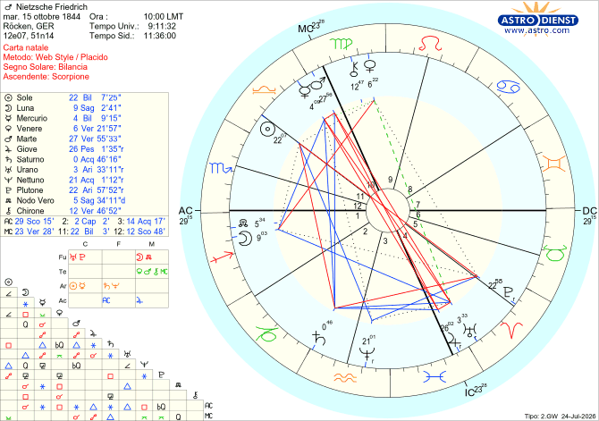

Biografie
Friedrich Nietzsche
Tema natale e analisi astrologica secondo il metodo morpurghiano
NATO A ROCKEN (GERMANIA)
IL 15/10/1844 ALLE ORE 10:00
Bilancia Ascendente Scorpione

Quando nel 1882 Friedrich Nietzsche lancia il suo annuncio più celebre e sconvolgente — "Dio è morto" — non sta celebrando una cinica vittoria, ma sta descrivendo un dramma e, soprattutto, una ferita personale. A livello culturale, Nietzsche annuncia la fine dei valori cristiani e metafisici, che nella società borghese dell'Ottocento sono ridotti a pura ipocrisia, a una facciata di perbenismo priva di autentica spiritualità. Dietro quel grido filosofico si avverte una profonda e lacerante ferita emotiva che affonda le radici nella sua infanzia: la morte prematura del padre.
Karl Ludwig Nietzsche, stimato pastore luterano, si spegne dopo una terribile malattia cerebrale quando Friedrich ha solo cinque anni. Poco dopo muore anche il fratellino, di appena due anni. Per il "piccolo pastore" — così soprannominato dai compagni per la sua devozione — quelle perdite non rappresentano solo un trauma affettivo, ma lo shock teologico originario: il silenzio assoluto di Dio di fronte alla sofferenza. Per una famiglia che viveva di fede, quelle tragedie erano difficili da giustificare.
Nel tema natale questo dramma è fortemente rappresentato dal fatto che entrambi i luminari governano la VIII Casa e sono quindi avvolti nel velo della morte. A livello cosciente (rappresentato dal Sole), Nietzsche ha vissuto il tormento che la stessa malattia del padre potesse un giorno colpire lui stesso; a livello emotivo (Luna), invece, tutta la sua persona è stata travolta dai tragici eventi. La Luna infatti si trova nella I Casa, quella della personalità, ed è in quadratura a Venere nella IX Casa, proprio quella della fede, a indicare il forte sentimento di abbandono che ha provato. E non finisce qui, perché quando un evento è talmente grave da sconvolgere una vita, il tema natale lo urla a gran voce perché non possa sfuggire all'attenzione dell'interprete: il Sole riceve l'opposizione di Plutone, il quale — come il Sole e la Luna — coinvolge anch'esso una Casa che richiama la morte, la XII, quella dell'invisibile e dell'aldilà, di cui infatti è dispositore; e Plutone stesso rappresenta la morte.
Il padre rimase per tutta la sua vita un oggetto di totale idealizzazione, una figura quasi mitica, avvolta in un'aura di purezza, dolcezza e nobiltà spirituale (il Sole è in trigono a Nettuno). Bisogna tenere presente che a cinque anni i genitori sono visti come figure semidivine, onnipotenti, protettive e prive di difetti. Perdendo il padre in quel momento, l'immagine si "congela" nel tempo: mancando la successiva fase di crescita — quella dell'adolescenza, in cui normalmente si sperimenta il conflitto e si iniziano a vedere i difetti e le fragilità dei genitori — l'adulto conserva intatta quella lente infantile. Infatti, nel 1888, ormai più che adulto, nella sua autobiografia Ecce Homo traccia uno splendido ritratto del padre, descrivendolo con parole di una tenerezza commovente e associandolo alle vette più alte dello spirito:
"Mio padre morì a trentasei anni: era delicato, amabile e morboso, come un essere destinato soltanto a passare oltre... Nel corso dello stesso anno in cui la sua vita declinò, declinò anche la mia... Considero un grande privilegio aver avuto un tale padre: mi sembra persino che questo spieghi tutto ciò che io ho di altri privilegi — non dico della volontà, ma dello spirito."
Nonostante l'esperienza traumatica e dolorosa che aveva vissuto, Nietzsche fino all'adolescenza non solo rimase cristiano, ma fu considerato un modello esemplare di devozione e purezza religiosa. La fede non era per lui una semplice abitudine domenicale, ma il centro assoluto della sua intera esistenza.
Ma allora, perché in seguito diventò addirittura l'Anticristo?
Con tutta probabilità, i primi istinti sessuali — che sono una componente naturale, biologica e potente dello sviluppo umano — si scontrarono con un'educazione religiosa rigida e colpevolizzante. L'unica via d'uscita per legittimare la propria natura senza sentirsi costantemente "sbagliato" e "in colpa" fu mettere in discussione la validità dei dogmi religiosi. Il segno del Cancro (legato alla famiglia e all'infanzia) è collocato nella VIII Casa, che governa la sessualità, i tabù e i segreti psicologici, e conferma che i primi impulsi sessuali e l'intimità sono stati vissuti in un clima di vergogna, segretezza o forte condizionamento emotivo familiare. Anche perché la Luna, governatrice dell'VIII Casa, riceve una quadratura da Venere proprio dalla IX Casa (la filosofia e la dottrina religiosa), a indicare che l'istinto sessuale viene frenato dall'educazione religiosa con i suoi rigidi precetti. Giove leso in Pesci e in IV Casa crea un'atmosfera familiare intrisa di aspettative morali invisibili, sacrifici richiesti e sensi di colpa striscianti.
Questo clima di aspettative invisibili e forti condizionamenti si concretizzò dolorosamente nel 1864, quando Nietzsche si iscrisse all'Università di Bonn. Il suo desiderio profondo era studiare Filologia classica, lo studio dei testi antichi — forse una scelta stimolata dal fatto che in quegli anni la Germania era il centro della "critica biblica", un movimento di studiosi che analizzava i Vangeli non come testi sacri dettati da Dio, ma come documenti storici scritti da uomini, pieni di contraddizioni e manipolazioni. La madre, al contrario, pretendeva che il figlio seguisse le orme del defunto marito e diventasse un pastore luterano; per lei l'unica scelta onorevole era la facoltà di Teologia. Per non distruggere il cuore della madre e mantenere la pace, Nietzsche cedette a un compromesso e si iscrisse a entrambe.
Bastò un solo semestre, però, per fargli capire che non poteva tollerare la teologia: la sentiva come un'attività intellettualmente disonesta, dove bisognava credere prima di pensare. La decisione di abbandonarla definitivamente scatenò un dramma familiare insanabile, che il suo tema natale fotografa alla perfezione nell'opposizione tra la congiunzione Marte/Mercurio in X Casa (il guerriero e gli studi che cercano la propria affermazione autonoma) e la congiunzione Giove/Urano in IV Casa (il bisogno radicale e improvviso di staccarsi dalle radici e decidere con la propria testa).
A recidere l'ultimo cordone ombelicale con il cristianesimo della sua infanzia, trasformando il dubbio in una scelta esistenziale irreversibile, furono due letture cruciali: David Strauss, che aveva applicato il metodo filologico ai Vangeli riducendo i miracoli a miti, e Arthur Schopenhauer, che nel suo capolavoro descriveva il mondo come un luogo caotico dominato da una forza cieca e irrazionale, privo di qualsiasi disegno provvidenziale. C'è una lettera del giugno 1865 scritta alla madre che sigilla questa rottura definitiva: "Se vuoi raggiungere la pace dell'anima e la felicità, allora credi; se vuoi essere un discepolo della verità, allora indaga."
Questa indagine radicale e solitaria, nata come una viscerale ribellione a quanto subìto, finirà per restituirci un filosofo atipico, dalla modalità espressiva unica. Per liberarsi da una famiglia satura di moralismi invisibili, Nietzsche si trasforma in un paradossale "profeta all'incontrario". Il culmine di questa dinamica esplode, anni dopo, in Così parlò Zarathustra: qui il suo ateismo mostra una potenza grandiosa e una maestosità che nessun altro pensatore ateo è mai riuscito a raggiungere. Nietzsche non si limita a negare Dio, lo sostituisce con un'intensità tale da trasmettere la pura estasi del mistico. Zarathustra imita i Vangeli luterani della sua infanzia — parla per parabole, sale sulla montagna, usa espressioni solenni come "In verità vi dico" — ma lo fa per divinizzare la materia. Rovescia la trascendenza sull'immanenza, caricando la Terra di un peso specifico immenso. La sua scrittura possiede una forza così trascinante che il lettore si ritrova ad abbandonare ogni certezza religiosa sentendosi, paradossalmente, del tutto appagato. Non c'è aridità, non c'è deserto: la fiamma mistica che un tempo illuminava il Cielo viene riversata interamente sul Dionisiaco, fondendo l'uomo con l'energia selvaggia e sacra della vita.
Nietzsche ottenne la cattedra di professore di filologia classica prima ancora di aver finito il dottorato, a soli 24 anni: l'Università di Basilea, infatti, era rimasta così colpita dalle sue pubblicazioni su riviste specializzate che volle assumerlo subito. La sua abilità è ben rappresentata da Marte in Vergine, che dà una modalità d'azione analitica, minuziosa, quasi chirurgica — la capacità di lavorare su dettagli minimi con pazienza e rigore — e da Mercurio in Bilancia, che aggiunge una mente comparativa, capace di pesare varianti, cercare equilibrio tra alternative, valutare con gusto estetico. Insieme, nella X Casa (vocazione, ruolo pubblico), descrivono bene un mestiere fondato sul confronto meticoloso di testi. Saturno in Acquario, in II Casa, in trigono a Marte/Mercurio, porta struttura, disciplina, capacità di sostenere un lavoro lungo e paziente nel tempo: Saturno infatti è il pianeta della competenza costruita per accumulo, dell'expertise che matura con gli anni. In Acquario, questa disciplina si esprime in modo sistematico ma anche originale: non erudizione fine a se stessa, ma costruzione di sistemi, classificazioni, metodi — un approccio quasi "scientifico" all'analisi testuale, capace di innovare dentro la tradizione (l'Acquario ama riformare le strutture esistenti).
Non trascurabile è la II Casa, che parla di valori, risorse, ciò su cui si costruisce sicurezza materiale e competenza. Saturno lì suggerisce che questa competenza tecnico-analitica diventa anche una risorsa concreta, qualcosa su cui la persona costruisce identità professionale e possibilmente sostentamento — coerente con un mestiere accademico o editoriale strutturato, non un hobby erudito.
Nella primavera del 1879, a soli 34 anni, rassegnò le dimissioni dall'Università di Basilea, la quale gli concesse una piccola pensione che gli permise di vivere. Aveva maturato questa decisione per diverse ragioni: soffriva di emicranie fortissime, problemi alla vista e disturbi di stomaco che gli rendevano impossibile fare lezione. Ma soprattutto aveva raggiunto la consapevolezza che lo studio sterile dei testi non rispondeva ai grandi interrogativi esistenziali. Sentì quindi il bisogno di indagare il mondo greco per rintracciare le radici della crisi moderna e proporre una rinascita culturale.
La rottura con la filologia si può far risalire al 1878, quindi ancora prima delle sue dimissioni, con la pubblicazione del suo primo vero libro di filosofia, Umano, troppo umano, che gli causò scandalo e isolamento perché in esso metteva fortemente in dubbio i valori della società. In questo libro dimostra che dietro l'altruismo si nasconde spesso l'egoismo, e dietro la religione c'è solo la paura della morte. Elogia lo spirito libero, capace di dubitare di tutto e di distruggere i dogmi.
Nietzsche era convinto che l'umanità fosse addormentata, narcotizzata da secoli di illusioni religiose e filosofiche, e che per risvegliare i suoi contemporanei da un sonno così profondo fosse necessario un linguaggio forte, aggressivo. Non voleva convincere con la logica calma e distaccata di un professore; voleva scuotere, provocare, fare arrabbiare e, se necessario, ferire le certezze del lettore. Definiva se stesso un filosofo che brandisce un martello, e i suoi libri "dinamite". Il tema natale fotografa bene questo tipo di linguaggio: Mercurio-Marte in X Casa parla di una comunicazione che si manifesta nel pubblico, nella carriera, nel ruolo sociale — una parola diretta, tagliente, che non teme lo scontro (Marte) e che nella X Casa cerca visibilità, autorità, riconoscimento. È un modo di esprimersi che si impone, non che media. L'opposizione con Urano-Giove in IV Casa porta questa energia in dialettica con le radici, il privato, l'eredità (anche ideologica o familiare) della persona. Giove simboleggia "la parola", e Urano è la rottura, l'anticonformismo: in IV Casa è qualcosa che nasce da dentro, dalla propria storia, e che chiede di rompere schemi ereditati.
In breve, questa configurazione indica una persona che non si limita a informare, ma vuole scardinare, attraverso il linguaggio pubblico, verità o strutture che sente radicate in sé come istanza di cambiamento.
Desideroso di rendere il suo pensiero ancora più incisivo, polemico e sovversivo, e rifiutando le verità assolute, Nietzsche abbandona quasi subito la scrittura in lunghi capitoli a favore dell'aforisma: frasi brevi, fulminee, taglienti, che devono colpire il lettore come un fulmine.
Possiamo rintracciare questa volontà nel Sole in XI Casa in trigono a Nettuno in III Casa. Nettuno è nella casa del pensiero e della comunicazione e non ama i confini delle parole rigide. Nell'aforisma, la parola cessa di essere un semplice strumento descrittivo e diventa un simbolo. Un buon aforisma fa risuonare qualcosa nell'inconscio di chi legge; non spiega la realtà, la evoca. Non è univoco, è suggestivo e lascia ampio spazio all'interpretazione, esattamente come il nebbioso Nettuno. Poiché questo Nettuno è in trigono a un Sole in Bilancia, c'è un bisogno viscerale di bellezza, simmetria e armonia formale, e la ricerca della parola esatta, quella che crea l'equilibrio perfetto tra suono e significato: la sua scrittura infatti era estetica, musicale e bellissima. Dal momento che Nettuno è posizionato nel segno dell'Acquario, desidera scardinare i vecchi modi di pensare con una sola frase cinica, ironica o illuminante. Il Sole si trova in XI Casa, cosignificante dell'Acquario: il pensiero è completamente immerso nell'energia aquariana, dando vita a una filosofia davvero originale.
Nietzsche viene spesso ricordato soprattutto per la sua teoria dell'oltre-uomo, un concetto tanto affascinante quanto frainteso, che nel corso della storia è stato piegato e strumentalizzato per scopi ben lontani — quando non opposti — al suo significato originario.
Chi è l'Oltreuomo?
L'Oltreuomo è chi ha il coraggio di essere fedele solo a se stesso. Questo non significa affatto dominare o schiacciare gli altri: la "volontà di potenza" di Nietzsche non è la forza bruta del dittatore, ma il controllo assoluto sulle proprie passioni e sui propri istinti, senza negarli.
In poche parole, Nietzsche dice che dentro ognuno di noi si agita uno scontro eterno tra due divinità greche; polarità, che Nietzsche aveva già teorizzato ne La nascita della tragedia:
DIONISO: il dio dell'ebbrezza, del caos, degli istinti bestiali, della sessualità e delle passioni selvagge. È l'energia vitale pura, grezza e potenzialmente distruttiva.
APOLLO: il dio del sole, dell'ordine, della misura, della poesia e delle forme armoniose.
Il segreto di Nietzsche sta tutto qui: l'Oltreuomo non è un bigotto che cerca di uccidere o reprimere Dioniso (gli istinti), e non è un bruto che si lascia travolgere dal caos dionisiaco. L'Oltreuomo fa qualcosa di infinitamente più nobile: non permette ad Apollo di castrare Dioniso, ma usa la forma e la misura apollinea per incanalare, accogliere e sublimare l'energia selvaggia del dio del caos. Prende la rabbia, la sofferenza e gli impulsi più oscuri e, invece di sfogarli sugli altri, li costringe a coesistere con la bellezza, diventando arte, poesia, musica, creatività e stile. La vera potenza non si misura da quante persone riesci a sottomettere là fuori, ma da quanto sei capace di governare l'universo che hai dentro, dicendo un "Sì" incondizionato alla vita. È lo stesso Sì che Nietzsche chiamerà amor fati: non la rassegnazione di chi subisce il destino, ma l'amore attivo per ogni istante vissuto — dolore compreso — al punto da desiderarne l'eterno ritorno, da volerlo rivivere identico, all'infinito, senza cambiare una virgola.
E se questo intero processo filosofico fosse fotografato millimetricamente in una configurazione astrologica?
È esattamente ciò che accade nell'opposizione tra il Sole in Bilancia in XI Casa e Plutone in Ariete in V Casa. Come sanno tutti gli astrologi, l'opposizione rappresenta due forze opposte che devono trovare il modo di coesistere per non provocare sofferenza.
La forza dionisiaca è rappresentata da Plutone in Ariete in V Casa: un serbatoio di energia vitale, creativa, erotica e distruttiva primordiale. Qui Plutone agisce come la forza desiderante più prepotente e cieca, un impulso che emerge direttamente dall'inconscio e che è difficilissimo da dominare. È l'istinto puro, il bisogno di esistere senza filtri, di dire "Io voglio, io creo, io esisto". È un'energia intensamente egocentrica e maschile/fallica (l'archetipo del guerriero/sovrano), rafforzata dal fatto che Plutone si trova nel segno dell'Ariete.
La forza apollinea è rappresentata dal Sole in Bilancia in XI Casa, che rappresenta la volontà di armonia, equilibrio e bellezza.
Se l'uomo riuscirà a risolvere questo conflitto, vi sarà una sintesi perfetta: l'istinto vitale e caotico non verrà castrato, ma "educato" e integrato dalla bellezza, dall'arte, dalla poesia e dalla creatività. Diventerà quindi l'Oltreuomo descritto da Nietzsche.
Ma l'Oltreuomo non è un punto d'arrivo o una statica perfezione: è, al contrario, un cammino di continua metamorfosi, un eterno autosuperamento. Questa stessa spinta in avanti è stampata nel tema natale di Nietzsche: il suo Sole in XI Casa — lo spazio del futuro — è sostenuto da un trigono a Nettuno in Acquario in III Casa. È la firma astrologica di un pensiero fluido, profetico, che rifiuta la rigidità e si proietta costantemente verso il domani, ricordandoci che l'essere umano è un processo in divenire, una corda tesa verso l'infinito.
Un altro argomento da trattare, perché a tutt'oggi c'è un dibattito aperto sulla questione, è se Nietzsche fosse misogino. La questione è ambigua, perché nelle sue opere i pensieri spesso si contraddicono. In alcune descrive le donne come superficiali, incapaci di un pensiero profondo e maestre dell'intrigo e della manipolazione emotiva; salvo poi, nella Gaia scienza, descrivere la stessa "manipolazione" come un'arte sublime. Nietzsche ammira il fatto che le donne sappiano giocare con le apparenze, proteggendo la loro interiorità, ed esprime un'enorme ammirazione per la forza, l'intuito e la complessità del mondo femminile, spesso considerandolo superiore a quello maschile su determinati aspetti.
Le sue critiche più feroci non sono rivolte alla donna in sé, ma alla donna borghese dell'Ottocento (che vedeva come prigioniera di una morale ipocrita) e al nascente movimento femminista, da lui ribattezzato sprezzantemente "l'infeudamento della donna". Il rischio dell'emancipazione femminile, secondo Nietzsche, è che le donne in cerca dell'uguaglianza con gli uomini finiscano col perdere il loro vero potere — la seduzione, l'incanto, la cura — con il solo effetto di rendere la donna più noiosa ed economicamente sfruttabile.
Astrologicamente parlando, l'analisi del tema natale esclude categoricamente qualsiasi configurazione riconducibile a dinamiche di misoginia, controllo tossico o prevaricazione nei confronti del femminile:
- il Sole, collocato nel segno femminile della Bilancia, è intrinsecamente votato alla diplomazia e alla giustizia relazionale; si trova inoltre nell'XI Casa, la più progressista e antipatriarcale dello zodiaco in assoluto;
- la Luna è in I Casa e quindi non solo rende molto più ricettivi, ma tende anche ad ammorbidire gli aspetti maschili della personalità: l'universo emotivo è centrale nell'espressione personale;
- la Luna in Sagittario è in quadratura a Venere in Vergine. Questo aspetto non ha alcuna attinenza con il risentimento verso le donne: si tratta esclusivamente di una tensione interna e strettamente personale tra il bisogno di libertà e spontaneità emotiva (Luna in Sagittario) e una tendenza a intellettualizzare o analizzare troppo i sentimenti nella quotidianità (Venere in Vergine) — una sfida evolutiva legata alle sue aspettative sentimentali, priva di qualunque traccia di ostilità di genere.
Una chiave di lettura condivisa da molti biografi è che la sua ostilità verso le donne potrebbe essere collegata agli insuccessi personali con loro. Il trauma più grande fu il rifiuto di Lou Andreas-Salomé, giovane intellettuale russa di cui si era perdutamente innamorato e che preferì a lui l'amico Paul Rée. Non a caso, le critiche più aspre e radicali iniziarono a comparire nei testi scritti subito dopo questa cocente delusione amorosa. Infatti, in Così parlò Zarathustra, scritta tra il 1883 e il 1885, è contenuto l'aforisma più celebre e spietato:
"Vai dalle donne? Non dimenticare la frusta!"
Ma quella frase Nietzsche la fa pronunciare da una donna!
Paradossalmente, nel maggio del 1882 a Lucerna fu scattata una fotografia in cui Lou Salomé impugnava una frusta mentre si trovava su un carretto trainato da Nietzsche e dall'amico comune Paul Rée.
Cosa intendeva quindi Nietzsche? A chi è destinata la frusta, all'uomo o alla donna?
Forse è proprio per questo intreccio di ferite, ribellioni e conquiste che Nietzsche, oggi, ci parla più che mai. Viviamo in un tempo in cui i riferimenti tradizionali — religiosi, familiari, sociali — si sono progressivamente sgretolati, lasciando l'individuo sempre più solo davanti alle proprie scelte. Non ci sono più dogmi indiscussi a cui appoggiarsi, né autorità capaci di dettare un senso univoco all'esistenza. In questo vuoto, l'uomo contemporaneo è chiamato, quasi costretto, a diventare l'unico architetto di se stesso: a trovare dentro di sé, e non fuori, la propria bussola. È esattamente ciò che Nietzsche aveva intuito con largo anticipo nella sua idea di volontà di potenza, esposta con tutta la sua forza in La volontà di potenza: non dominio sugli altri, ma governo di sé, capacità di trasformare il caos — le proprie ferite, i propri istinti, le proprie contraddizioni — in forma, direzione, creazione. In un'epoca senza più padri né dèi a cui affidarsi, l'invito nietzschiano a diventare ciò che si è, costruendo da soli il proprio senso, non è mai stato così attuale.